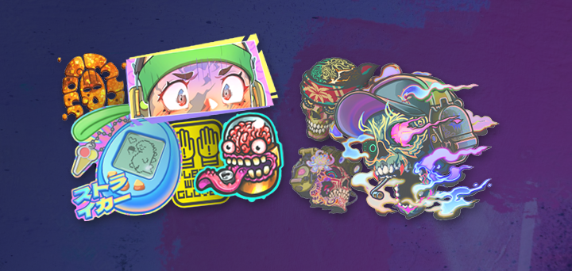

- ОБЫЧНОЕ ОБНОВЛЕНИЕ
- ОПУБЛИКОВАННО
- чт, 2 октября
Карты от сообщества, брелки и многое другое
Перейдём сразу к делу. В сегодняшнем обновлении представлены новые карты от сообщества в режимах «Напарники» и «Соревновательный», а также новые брелки (в том числе с дизайном от сообщества), наклейки и многое другое.
Карты от сообщества
От шахт «Золота» до движущегося поезда в «Транзите» — мы подготовили для вас четыре новые карты для сообщества. «Золото» и «Паласио» добавлены в режимы «Соревновательный», «Обычный» и «Бой насмерть», а «Крыша» и «Транзит» — в режим «Напарник».
Новый контент арсенала
Это маленькая фугасная граната... для вашего оружия. Она не взрывается, но определённо очаровательна . Представляем совершенно новые талисманы Доктора Бума, которые теперь доступны в Арсенале.
Несколько месяцев назад мы добавили амулеты в мастерскую, и вы откликнулись. Чтобы немного познакомиться с творческими и порой извращёнными умами сообщества CS2, взгляните на амулеты сообщества Missing Link в арсенале.
Говоря о дизайне сообщества, в Armory теперь представлены две совершенно новые коллекции наклеек, включая возвращение Sugarface!